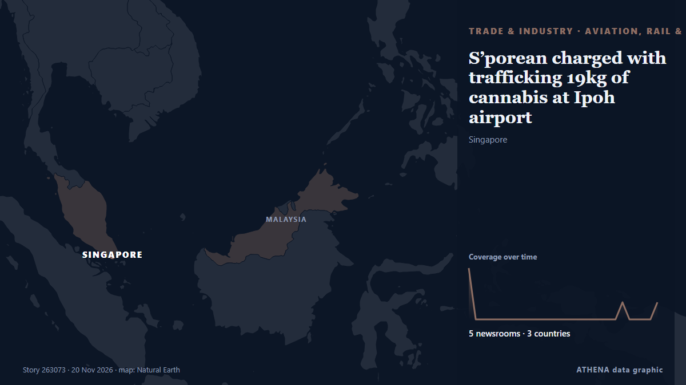

Aviation, rail & road
SponsoredPresented by  Cybernetics and Artificial Intelligence Lab Welcome to the Cybernetics and Artificial Intelligence Laboratory, established at the Department of Business Administration of the National and Kapodistrian University of Athens. The lab is headed by Professor Dimitrios Thomakos. The lab aims to do research that can be published in top venues. Our research uses tools and methods of Artificial Intelligence, and lies in the following areas: - Forecasting - Decision making - Cyber security - Finance We are always looking forward to collaborating with exceptional students!
Cybernetics and Artificial Intelligence Lab Welcome to the Cybernetics and Artificial Intelligence Laboratory, established at the Department of Business Administration of the National and Kapodistrian University of Athens. The lab is headed by Professor Dimitrios Thomakos. The lab aims to do research that can be published in top venues. Our research uses tools and methods of Artificial Intelligence, and lies in the following areas: - Forecasting - Decision making - Cyber security - Finance We are always looking forward to collaborating with exceptional students!
| 7 Nov | 0 |
|---|---|
| 8 Nov | 0 |
| 9 Nov | 0 |
| 10 Nov | 0 |
| 11 Nov | 0 |
| 12 Nov | 0 |
| 13 Nov | 0 |
| 14 Nov | 0 |
| 15 Nov | 1 |
| 16 Nov | 6 |
| 17 Nov | 11 |
| 18 Nov | 4 |
| 19 Nov | 1 |
| 20 Nov | 0 |

S’porean charged with trafficking 19kg of cannabis at Ipoh airport
No plea was recorded from Chen Long in the Ipoh magistrates' court as the case falls under the High Court's jurisdiction. from Free Malaysia Today
Russian flight lands in Turkey after bomb threat hoax
The Sukhoi Superjet 100 was flying from Mineralnye Vody in southern Russia to Antalya, where the COP31 UN climate summit is taking place. from Free Malaysia Today
Irish man charged with destroying US military C-130 aircraft
NEW YORK: An Irish man has been charged with damaging a US military C-130 aircraft at an airport in Ireland in an attack that left the plane “effectively destroyed”, prosecutors said on Tuesday. from New Straits Times
Judge signs off on sale of Spirit Airlines’ data to Google
Google can take possession of defunct Spirit Airlines' data for $10 million, a federal bankruptcy judge has ruled. from The Record (Recorded Future News)
Ukraine accuses Russia of targeting rescue operation after 'double-tap' strike kills 72
Efforts to recover bodies after a “double-tap” attack in southern Ukraine are being hampered by continuing Russian strikes, officials say. from BBC News
European Union maintains aviation bans on 12 African countries as 87 airlines appear on safety blacklist
The European Union has maintained aviation restrictions covering 12 African countries, with 87 airlines individually named across the affected countries in its latest air safety blacklist, as… from Club of Mozambique
Tanzania calls on ICAO to invest more in human capital, infrastructure, technology
MONTRÉAL: Tanzania has emphasised the need for investment in human capital, infrastructure and technology to strengthen the aviation sector and meet the growing demand for skilled professionals. from Daily News
British Airways Plane Gets Stuck In Mud After Veering Off Heathrow Taxiway
Reacting to the incident, a spokesperson for BA said, "We're very sorry to our customers for the disruption to their flight." from NDTV World
FAA halts installation of routers that led to ground stop
The Federal Aviation Administration has paused the installation of the routers that were linked to last week’s national ground stop, and turned off any Juniper routers that were already installed. from The Korea Times
Airbus expects Central Asian passenger traffic to nearly triple by 2045
Passenger traffic in Central Asia is projected to nearly triple over the next 20 years, rising from 89 billion revenue passenger-kilometers in 2025 to 242 billion by 2045, according to Airbus. from Kun.uz (English)
SJ to relaunch night train to Berlin via Copenhagen from December this year
Sweden's national rail company SJ has announced that it is restarting the night train between Stockholm and Berlin, travelling via Copenhagen, this time with a longer train and only three departures… from The Local Denmark
Trump seeks US$50 billion for US aviation overhaul after chaos
A nationwide technical failure brought US air travel to a standstill on Nov 13. from The Straits Times
Dubai airport passenger traffic falls 28.1% in first 9 months of 2026
RIYADH: Passenger traffic through Dubai International Airport fell 28.1 percent year on year in the first nine months of 2026, while third-quarter volumes declined 22.1 percent, as earlier… from Arab News
Northern Ireland’s young heroes came of age by the Danube... and there’s still more to come from Michael O’Neill’s exciting side
The two largest parties in the powersharing Executive have been involved in a simmering political fallout. from Evening Standard (London)
Did a single router bring US air travel to a standstill? Investigators seek answers
US Transportation Secretary Sean Duffy said Monday that investigators have yet to determine why a router installed by L3Harris Technologies at a remote facility in Arkansas triggered a nearly… from Israel Hayom (English)
Marriott Bonvoy Sign-Ins Were Down for Hours
Marriott’s website and app briefly blocked loyalty member log-ins Tuesday. from Skift
Five people injured amid severe turbulence on JetBlue flight to Florida
Some passengers were taken to hospital after flight safely landed at Fort-Lauderdale-Hollywood airport Five people were injured when severe turbulence struck a JetBlue flight landing in Florida on… from The Guardian
Top four US airlines could face US$345 million hit from FAA ground stop
The estimate by brokerage Bernstein covers American, Delta, United and Southwest. from The Business Times
US probes why a router installation sparked mass flight grounding
The company L3Harris has said it is cooperating with the official investigation into what went wrong. from The Straits Times